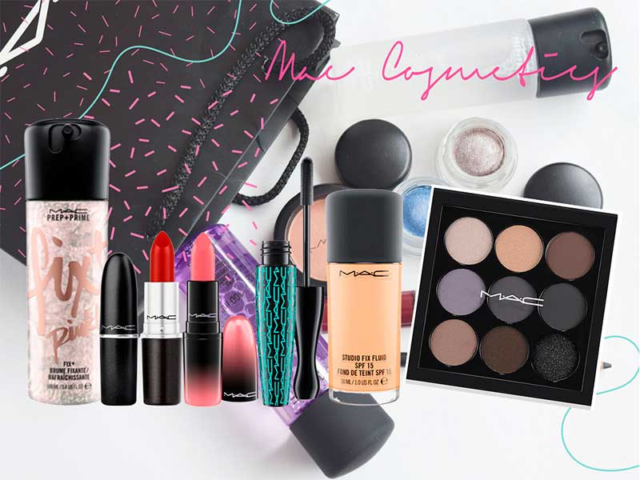

Marcas de maquillaje más vendidas
|
Una de las marcas mas vendidas es MAC Fue fundado en 1984 en Toronto, Canadá, por Frank Toscan ,
un maquillador y fotógrafo profesional, y Frank Angelo, un empresario. En un principio el maquillaje
M·A·C solo tenía y era usado con propósitos profesionales. Debido a su gran calidad y originalidad
comenzó a extenderse y a ganar fama, llegando al mercado convencional y creando stands, counters o
mostradores en los grandes almacenes más prestigiosos, primero de Estados Unidos y Canadá y después
a lo largo del mundo.
|
MAC distribuye una gran variedad de productos para el consumidor diario, como sombras, lápiz labial,
brillo de labios, correctores, base de maquillaje, esmalte de uñas, fijador de maquillaje, máscara
de pestañas. Entre todos estos productos de maquillaje MAC también vende perfumes, brochas de
maquillaje y productos para el cuidado de la piel. El 8 de junio de 2011, la compañía Warner Brothers
anunció que la heroína de ficción de DC Comics, la Mujer Maravilla se uniría con Cosméticos MAC para
crear la nueva colección de maquillaje de la Mujer Maravilla que estaría disponible en las tiendas
de MAC en la primavera del 2011. La colección incluirá rubor, sombras, delineador, brillo de labios,
lápiz labial, máscara de pestañas, esmalte de uñas y sellador de maquillaje.
|
 |
 |